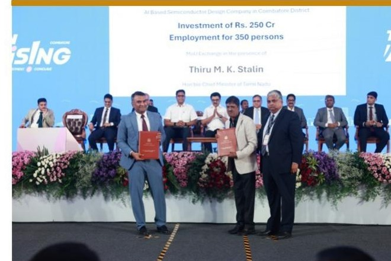
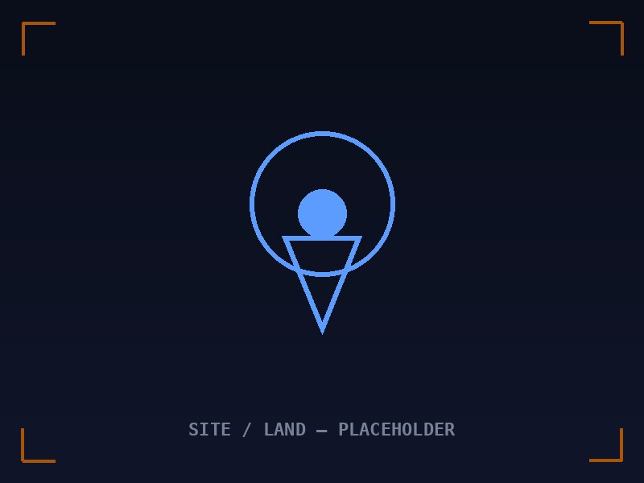

₹250 crore proposed investment
Government of Tamil Nadu MoU signed on 25 November 2025 in Coimbatore.
Zepto Logic combines reusable semiconductor IP, front-end design capability and applied research inside one Indian company. Customers and institutions can engage the capabilities that are ready today while seeing the broader semiconductor roadmap behind them.
The operating scope is designed for semiconductor programmes that value technical ownership, domestic execution and direct access to the engineering team.
Thirteen FPGA-validated arithmetic and interface soft IP blocks for technical evaluation and commercial licensing.
Architecture, RTL, UVM verification, lint, CDC/RDC, FPGA prototyping and IP-readiness engineering.
Cryptographic acceleration, secure computing, modular arithmetic and research-to-hardware programmes.
Public milestones provide context for the company’s scale and direction.

Government of Tamil Nadu MoU signed on 25 November 2025 in Coimbatore.

Selected from 100+ applicants and awarded Stage-II grant support.

Land allotted for a planned VLSI design campus; development is pending.
The maturity labels keep present commercial services distinct from capability development and long-term infrastructure.
Share the programme stage and technical objective. Zepto Logic can qualify the appropriate current capability and explain where it connects to the wider company roadmap.